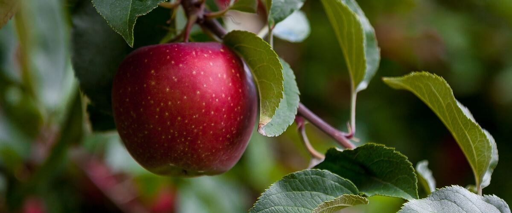

When to plant apple trees in Ashland and Talent, OR
Plant apple trees in Ashland and Talent Mar 25 – May 20.
- Difficulty
- Moderate
- Sun
- Full sun
- Spacing
- 8 to 12 feet apart for dwarf trees, 15 to 20 feet for semi-dwarf
- Planting depth
- Graft union 2 to 3 inches above the soil
- Frost
- Hardy perennial; comes back every year
- First harvest
- First apples in two to four years on dwarf trees, longer on bigger ones
Why these dates
Ashland and Talent's typical last spring frost is May 6. As a hardy perennial, this crop can go in about 6 weeks before that.
West-side valleys. The Willamette Valley, Puget Sound and southern Oregon valleys. Long frost-free seasons, but soil stays cold and wet into May, so warm crops wait for warm soil, not just the last frost.
How to grow apple trees in Ashland and Talent
- Pick a sunny spot with soil that drains well, and mix in an inch or two of compost.
- Plant apple trees Mar 25 – May 20, 8 to 12 feet apart for dwarf trees, 15 to 20 feet for semi-dwarf. Graft union 2 to 3 inches above the soil.
- Water deeply every week or two through the first two summers. Prune in late winter to an open shape, and thin young fruit to one per cluster in June for bigger apples.
- Harvest: Apples are ripe when the seeds turn brown and the fruit comes off with a gentle lift and twist. Taste one before picking the tree.
Key numbers
- 2–4 (dwarf)Years to fruit
- Needs a partnerPollination
- 6.0–7.0Soil pH
- Apple scabBiggest risk
Growing notes
What makes the difference in Northwest gardens, in plain language.
Choosing a variety and rootstock
The rootstock decides how big your tree gets and how soon it fruits. Dwarfing rootstocks such as M9 or M26 keep trees small enough to prune and pick from the ground, and they bear sooner, but they have weak roots and need a permanent stake. Semi-dwarf rootstocks like M7 make a sturdier, freestanding tree that takes a few more years to start.
West of the Cascades, scab resistance matters more than anything else. Liberty shrugs off scab in wet springs, and Akane holds up well too. Honeycrisp and Gravenstein are worth growing for flavor, but expect more spraying or more spotted fruit in rainy years.
Pollination partners
Almost every apple needs pollen from a different variety that blooms at the same time, carried by bees. A neighbor's tree or a crabapple within a few hundred feet often does the job, but planting two compatible varieties is the sure way. Gravenstein produces poor pollen, so it needs two other varieties nearby: one to pollinate it and one to pollinate the partner. Liberty, Akane and Honeycrisp all bloom in the middle of the season and work well together.
Northwest pests and how to stay ahead
Apple scab is a fungus that spreads from last year's fallen leaves during spring rain, so raking and composting leaves in fall cuts the next year's infection a lot. Codling moth larvae tunnel to the core in summer; hang traps in May to see when the moths fly, and bag young fruit in paper or nylon sleeves if you want clean apples without spraying.
Apple maggot also attacks fruit in parts of the region, and some eastern growing areas restrict moving homegrown apples. Picking up dropped fruit every week helps with both maggots and moths.
Common questions
When is the last frost in Ashland and Talent, OR?
Typically May 6. In 9 years out of 10, frost is over by May 27. These are 1991–2020 NOAA climate normals for Ashland.
Is it too late to plant apple trees in Ashland and Talent?
The spring planting window runs through May 20. Potted plants can still go in later if you water them faithfully through their first summer. Fall planting also works well here.
How long until I can pick apple trees?
First apples in two to four years on dwarf trees, longer on bigger ones. Apples are ripe when the seeds turn brown and the fruit comes off with a gentle lift and twist. Taste one before picking the tree.
Do I need two apple trees?
Usually, yes. Most apples won't set much fruit without pollen from a different variety that blooms at the same time. If a neighbor has an apple or crabapple close by, one tree may be enough, but planting two is the reliable choice.
When should I plant an apple tree in the Northwest?
Plant bare-root trees in late winter and early spring while they're dormant, as soon as the soil isn't soggy. Potted trees can go in later, but they'll need more summer water the first year.
Why are my apples covered in black spots?
That's most likely apple scab, a fungus that thrives in wet Northwest springs. The fruit is still edible once peeled. Rake up fallen leaves each fall and consider a resistant variety like Liberty next time you plant.
Also plant in Ashland and Talent around the same time
Planting dates for apple trees in nearby areas
- Roseburg, OR Mar 1 – Apr 26
- Medford, OR Mar 1 – Apr 26
- Grants Pass, OR Mar 1 – Apr 26
- Portland, OR Mar 1 – Apr 26
- Gresham, OR Mar 1 – Apr 26
- Wilsonville and Canby, OR Mar 1 – Apr 26
Full planting calendar for Ashland and Talent · Apple trees in every city